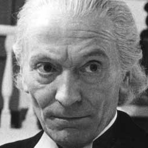

| Home | The Doctors | The Companions | The Villains |
|
|||
|
The First DoctorThe First Doctor is the initial incarnation of the Doctor, the protagonist of the BBC science fiction television series Doctor Who. He was portrayed by the actor William Hartnell from 1963 to 1966. Hartnell reprised the role once, in the tenth anniversary story The Three Doctors (1973), although due to his ailing health the story was written so he would not have to appear very extensively. After Hartnell's death in 1975, actor Richard Hurndall stood in for him in the 20th anniversary story The Five Doctors (1983). Archival footage of Hartnell was used in the semi-centennial special "The Day of the Doctor", voiced-over in the latter by John Guilor. A young version of the character appears in "Listen" (2014), portrayed by an uncredited child actor.Within the series' narrative, the Doctor is a centuries-old alien Time Lord from the planet Gallifrey who travels in time and space in his TARDIS, frequently with companions. When the Doctor is critically injured, he can regenerate his body; in doing so, his physical appearance and personality change. Hartnell's Doctor is the Doctor's "original" form. The regeneration plot device was introduced when Hartnell needed to leave the series, and consequently has extended the life of the show for many years. His original companions were his granddaughter Susan (Carole Ann Ford) and her schoolteachers Ian Chesterton (William Russell) and Barbara Wright (Jacqueline Hill). Hartnell's version of the Doctor was also the basis for the character played by the actor Peter Cushing in the 1965 and 1966 Dr. Who films, which do not share a continuity with the television series. |